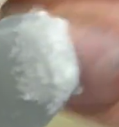

To increase the bond strength and shorten the cure of superglue, you can mix it with baking soda. The bicarbonate molecules within baking soda react with superglue to create reactice ions. These reactive ions more easily bond with other molecules in the liquid superglue. This causes longer and stronger cystals of superglue. The quick cure time allows for use in high foot traffic areas. It also forms a better bond with plastics. In sources, there are videos of how to apply baking soda to superglue.
